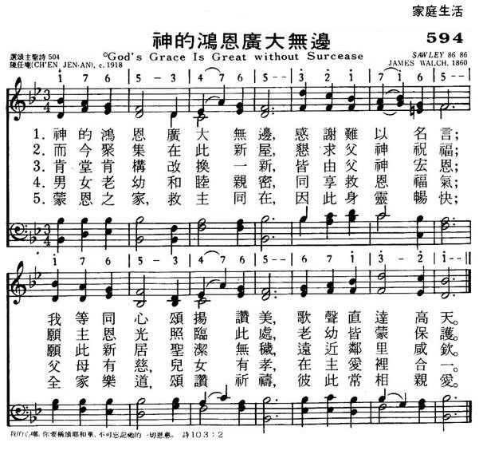

|
|
|
|
|
594神的鸿恩广大无边
1.神的鸿恩广大无边，感谢难以名言；
我等同心颂扬赞美，歌声直达高天。 2.而今聚集在此新屋，恳求父神祝福； 愿主恩光照临此处，老幼皆蒙保护。 3.肯堂肯构改换一新，皆由父神宏恩； 愿此新居圣洁无秽，远近邻里咸钦。 4、男女老幼和睦亲密，同享救恩福气； 父母有慈，儿女有孝，在主爱里合一。 5.蒙恩之家，救主同在，因此身灵畅快； 全家乐道，颂赞祈祷，彼此常相亲爱。 |
|
https://www.mred365.cn/szxg/7597.html

|
|
|
|
|

（来源：《赞美诗新编史话》）
一年又过歌
经文：“求你指教我们怎样数算自己的日子，好叫我们得着智慧的心” (诗9O：12)。
这首诗是较早的国人创作圣诗之一。原作者陈任庵生于 l88O年，19O3年受洗，是挪威信义会最初受洗的四位信徒之一。他原在湖南益阳桃花仑信义会中学任教，辛亥革命后在临时政府禁烟总局任职，以后被委派为县长，陈氏辞官不就，仍回信义会中学教书，业余协助编译圣诗，写了若干创作圣诗，被选入信义会《颂主圣诗》有六首。
这首《一年又过歌》约作于 1918年，内容含义很好，但词句欠雅致，所以选人其它圣诗时都稍有修正，原诗共五节，选入 内地会《颂主圣歌》时，第四节为：
又是一年过去，不觉便到百年，
似箭光阴使我畏惧，末日如在眼前。
后两句选入信义会《颂主圣诗》时改为：
命数俱由我主旨意，我生或者无多。信义宗《颂主圣诗》将四节第二句改作：“求将我罪赦免”；将第五节改为：
又是一年过去，更求使我日新；
此后惟有和主同居，诚心为主选民。
《新编》选入三节。词句也作了修改。
曲谱是梅森 (事略参阅第75首)所写，名叫《博伊斯顿 (BOYLSTON)》，初次出版于 183O年的《唱诗班与会众唱诗集》中。博伊斯顿是地名，在美国马萨诸塞州，乃梅森的出生地。